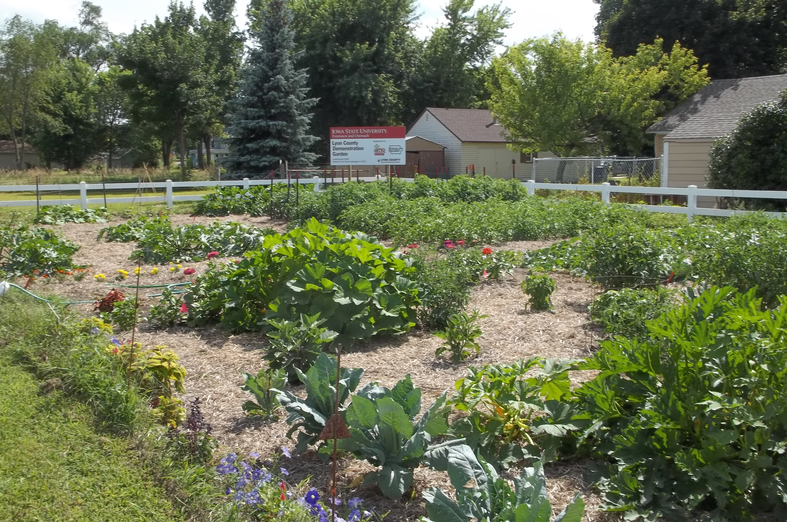
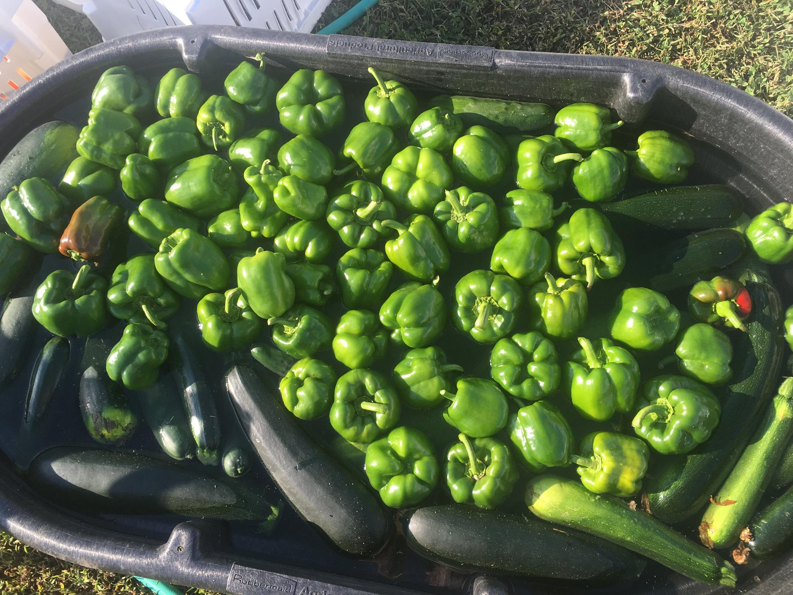
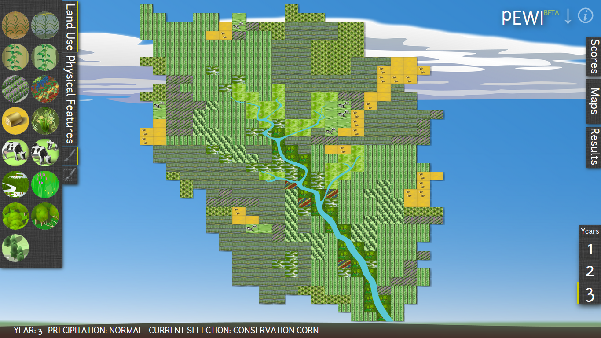

“There will be no nature without justice. Nature and justice, contested discursive objects embodied in the material world, will become extinct or survive together.”
– Donna Haraway (1992, 311), “The Promises of Monsters: A Regenerative Politics for Inappropriate/d Others.”
“Instead of pointing to those ‘without’ and citing injustice, we might imagine how we are intimately tied to broader conceptions of human and planetary life and which demonstrate our common and difficult histories of encounter.”
– Katherine McKittrick (2011, 960), “On Plantations, Prisons, and a Black Sense of Place.”
What are the politics of developing just and anti-racist food, agricultural, and environmental systems? To answer this question, my recent research explores how uneven geographies and political ecologies shape and are shaped by racialized discourses of food, agriculture, and the environment in the United States. As a scholar-activist, I have collaborated directly with communities and grassroots groups that are working to advance social and environmental justice, engender a critical understanding of food and food access, and struggle against a racially organized state. Through these engagements, I (co-)develop critical scholarship on issues such as power, voice, and relationality. I additionally explore opportunities for university-community partnerships to engage in processes of ‘co-experimentation’ (following Gibson-Graham and Carolan). Co-experimentation in my research includes alternatives modes of growing, sharing, and eating food. It also includes critical, reflective conversations and co-authorships with academic and community partners that may open up paths to more ‘just’ naturalcultural relations. In these collaborations, I have explored how everyday experience, radical vulnerability, emotion/affect, the body, and relational life constitute co-experimental modes of social transformation.
Focus areas
Prison Agriculture Lab
I am co-director of the CSU Prison Agricultural Lab, along with Dr. Joshua Sbicca from the CSU Department of Sociology. Our lab is conducting a first-of-its-kind nationwide study on food and agricultural activities within US prisons. Our initial effort has been two-fold: 1. compiling and analyzing a nationwide dataset of food and agricultural activities at prisons, and 2. contextualizing the development and expansion of agricultural activities since Reconstruction through the lens of racial capitalism. In framing this research as abolition praxis, not only are we interested in understanding how present-day practices of prison agriculture are implicated in the racial capitalist project of prison expansion, we are also looking for ways in which prison agriculture counteracts and contests carcerality—and might work toward the elimination of prisons. Beyond our core research activities, the Prison Agriculture lab has collaborated with the CSU Geospatial Centroid to map prison agriculture, census, and related socio-spatial data.

ISU Extension & Outreach
Local Foods and SNAP-Education Programs
My dissertation research was part of an interdisciplinary effort within ISU Extension & Outreach (ISUEO) to coordinate statewide community donation gardens, entitled Growing Together Iowa. In this USDA Supplemental Nutrition Assistance Program Education-funded project, ISUEO collaborates with university research farms, county extension Master Gardeners, food pantries, and other grassroots partners. The project supports Master Gardeners in forging a donation gardening network to increase fresh produce in local food pantries. As a feminist scholar committed to praxis, I interacted with, worked alongside, and learned from the people working in the gardens and pantries, and the people accessing the food. Collaborating with Iowans across the state, I worked to foster community efforts for local, sustainable foods and to develop strong, caring, and socially just communities.
The Local Foods program supported my dissertation research on community food systems in Iowa. I coordinated my research activities in the Growing Together project with the Local Foods Team through participating in our community development program and serving on our equity and inclusion committee.
Through dissertation fieldwork, I began engaging in community co-authorship with food and environmental justice activists and organizers in Dubuque, Iowa. Our co-authorship is ongoing, focusing on anti-racist activism, municipal governments, and the intersections of urban food, housing, and land in Dubuque.
Department of Natural Resource Ecology & Management
Landscape Ecology & Sustainable Ecosystem Management Lab
People, Land Use & Society Lab
Integrated Sustainable bioEnergy Pathways Team
My master’s research focused on agroecological modeling in the U.S. Corn Belt. PEWI, or People in Ecosystems/Watershed Integration, is a simple web-based learning tool to help people understand human-landscape interactions and tradeoffs. PEWI helps people explore ways to balance agricultural production in the U.S. Corn Belt with other environmental benefits, including clean water, abundant wildlife, and recreation, among others. In my role on this project, I was the lead developer of the science model for PEWI 2.0, and also developed educational materials, created a library of PEWI-based lesson plans, conducted workshops and course units on PEWI, oversaw web development, and served as project manager. In this role, I also worked with the ISEP, Integrated Sustainable bioEnergy Pathways, team to incorporate agroecological modeling into its agent-based modeling of bioenergy supply chains.